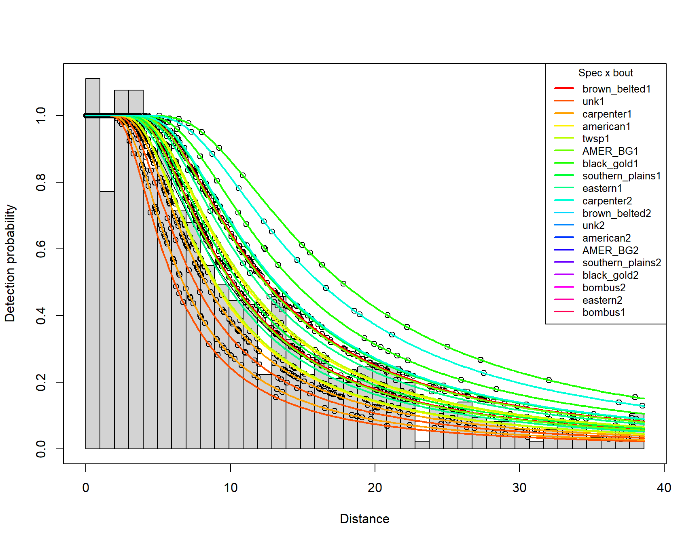
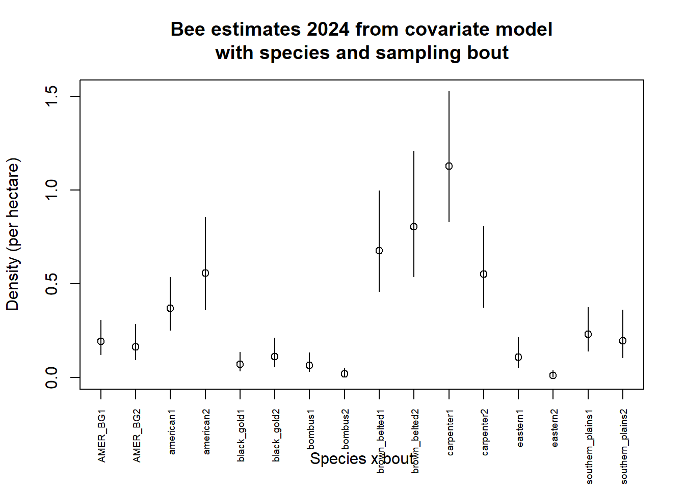

Table 1: Approximate detections by species and bout for 2024
1
2
AMER_BG
52
33
american
90
108
black_gold
23
34
bombus
22
5
brown_belted
178
197
carpenter
198
86
eastern
28
4
southern_plains
65
52
twsp
15
0
unk
49
14
Two things to note about the table above: - many detections for some species and - few detections for species I presume are rare (we’ll deal with that shortly).
My presumption about objectives
I’m guessing Cassidy would like estimates by species and by sampling bout
We could easily ignore sampling bout and pool the data across bouts; this will produce density estimates that are the average density across the bouts.
Rather than pooling, I’ll take the more difficult analytical approach of producing species- and bout-specific density estimates.
Before starting the modelling, let’s come to grips with the distribution of perpendicular detection distances for species and bout combinations. This will give insight about what is in store for us when modelling begins.
Clearly there will be a struggle to fit detection function models to some of the species x bout combinations. Before we attack that problem, let’s tackle a simpler problem: estimating density for the common “brown_belted”.
3 Brown belted analysis
This species has nearly 200 detections for each sampling bout. Hence, if we wanted bout-specific estimates of density for this species, the most straightforward approach would be to simply pluck detections of brown_belted from the 2024 data frame.
A quick check of the integrity of the survey design in the subsetted data shows:
print(length(unique(bb_bees_b1$Sample.Label)))
[1] 53
print(length(unique(bb_bees_b2$Sample.Label)))
[1] 45
Even this most common species is only seen on little more than one-third of the 151 transects surveyed. If we carried on like this, we would produce extremely positively biased estimates of density.
Solution, specify survey design manually using two arguments to the ds function: region_table and sample_table.
A glance at the histograms produced earlier suggests an abrupt drop in detection probability around 5-8m, suggesting the flexibility of the hazard rate model will be useful, but we fit the full series of candidates to each bout. Note too the existence of a small number of detections at great distances, they will not be very useful in our detection function modelling. We are likely to be more aggressive in our truncation than we might otherwise be when dealing with non-insect species.
Model criticism candidate model set brown_belted bout 2
Key function
Formula
C-vM p-value
\(\hat{P_a}\)
se(\(\hat{P_a}\))
\(\Delta\)AIC
Hazard-rate
~1
0.712
0.236
0.025
0.000
Uniform with cosine adjustment terms of order 1,2,3,4,5
NA
0.643
0.227
0.016
5.307
Half-normal
~1
0.000
0.358
0.014
42.282
The difference in \(\Delta\)AIC among candidates is greater for bout 2, and you will see a bit more disparity between \(\hat{P}_a\), particularly the non-fitting half normal model.
Let’s look at the fit of the selected models for each bout:
3.2 Did truncation changes influence estimated density?
We have seen there is no change in the models selected when changing the truncation distance, how about the estimates?
bb1_10 <- bbunicos$dht$individuals$Dbb2_10 <- bbhrsim$dht$individuals$Dbb1_31 <- bbunicosx$dht$individuals$Dbb2_31 <- bbhrsimx$dht$individuals$Destimates <-rbind(bb1_10, bb1_31, bb2_10, bb2_31)estimates$Label <-c("Bout1 10%", "Bout1 31m", "Bout2 10%", "Bout2 31m")knitr::kable(estimates, digits=3,caption="Estimates for brown belted, both bouts, different truncation distances")
Estimates for brown belted, both bouts, different truncation distances
Label
Estimate
se
cv
lcl
ucl
df
Bout1 10%
0.651
0.126
0.193
0.446
0.950
190.066
Bout1 31m
0.684
0.138
0.201
0.462
1.013
203.897
Bout2 10%
0.653
0.135
0.206
0.436
0.976
231.548
Bout2 31m
0.673
0.144
0.214
0.443
1.022
243.124
We see roughly a 3-5% difference in the point estimates from the more aggressive truncation. Place that difference in the context of the coefficient of variation (~20%).
We could continue to carry out this species by species, bout by bout analysis for the common species. However, eventually problems will arise when get to species like AMER_BG, black_gold, bombus, etc. If estimates for those species x bout combinations are important, we will have to “borrow strength” from other species to produce robust estimates for those rare species.
We “borrow strength” via the use of species and sampling bout as covariates in the detection function. I ignore other potential covariates, e.g. observer, because the property of pooling robustness ensures that bias is not introduced by ignoring such covariates.
4 Use 2024 to build 2-level stratification
Note, for this current analysis, I carry the twsp and unk species in the analysis; in all likelihood, those species should probably be deleted before the analysis continues as robust estimates for those species x bout combination are unlikely to be informative.
But make sure design (effort and transects) are respected
There should be 151 transects each 500m in length for each of our “strata”
even though strata are not geographic, but rather species and bout defined
4.1 Construct region table and sample tables
The following step is critical
If the following specification of the survey design is not followed, the analysis will issue no complaints and will produce density estimates that appear to be quite wonderful.
However, they will be wrong.
Because the stratum redefinition destroys the information about the survey design.
Instead, the software assumes there were only transects on which detections of the species x bout combinations were made.
Always check the summary output from your fitted models to make sure the correct number of transects are represented.
knitr::kable(summary(yr24_hr_2level$ddf)$coeff$key.scale, caption="Looking for convergence problems in covariate coefficients")
Looking for convergence problems in covariate coefficients
estimate
se
(Intercept)
2.3163705
0.1768905
speciesamerican
-0.1288956
0.1958475
speciesblack_gold
0.3598236
0.2640821
speciesbombus
0.2680591
0.3690617
speciesbrown_belted
0.0099796
0.1846799
speciescarpenter
-0.4039568
0.1873527
specieseastern
-0.0423246
0.3281912
speciessouthern_plains
0.0507996
0.2260533
speciestwsp
-0.1139367
0.4077639
speciesunk
-0.4962881
0.2450548
as.factor(sample.bout)2
-0.2066934
0.0939350
4.2 Given the preferred model is OK, look at the plot
plot(yr24_hr_2level, nc=39)sp <-unique(yr24$species)bo <-unique(yr24$sample.bout)palette("ggplot2")for (i in1:length(sp)) {for (j in1:length(bo))add_df_covar_line(yr24_hr_2level, data=data.frame(species=sp[i], sample.bout=bo[j]),lwd=2, lty=1, col=rainbow(19)[i])}legend("topright", title="Spec x bout", legend=unique(yr24$Region.Label),lwd=2, lty=1, col=rainbow(19), cex=0.8)

Species and bout-specific detection probability estimates
Although the figure is pretty, we cannot deduce the species x bout-specific detection probabilities. Assuming these estimates are of interest, how do we produce them, given the software won’t cooperate with our request. Answer integrate detection function over distance for specific covariate levels.
Below is a function that will calculate detection probability for a given set of estimated covariate coefficients at a given perpendicular distance. We will use the function, in conjunction with the coefficients for a species and bout combination of interest.
gz<-function(z, beta, sigintercept, sigcoef, DistWin=FALSE,key="HR", w=max(z)){#this is a generic detection function that returns the probability of detecting an animal# z generic distance (perpendicular) - can be scalar or vector# beta shape coefficient# sigintercept intercept coefficient for sigma# sigcoef coefficient for specific factor level# DistWin coefficients from Distance for Windows or from R# key the detection function key, works for hazard rate and half normal# w truncation distance, by default the max of the distances##RETURNS: a probabilityif(key !="HN"& key !="HR") {stop("Argument 'key' must be either HN or HR") }if (DistWin) { sigma <- sigintercept +exp(sigcoef) exponent <- beta } else { numterms <-length(sigcoef) predictor <-0for (i in1:numterms) { predictor <- predictor + sigcoef[i] } sigma <-exp(sigintercept + predictor) exponent <-exp(beta) }if(key=="HR") { scale.dist <- z/sigma inside <--(scale.dist)^(-exponent) gx <-1-exp(inside) } else { scale.dist <- z # debatably don't scale for half normal inside <--(scale.dist^2/(2*sigma^2)) gx <-exp(inside) }return(gx)}
4.3 Apply function to the selected yr24_hr_2level model
Code below plucks out the relevant estimated coefficients from our model that included species and bout as covariates. I demonstrate only for two species and the two bouts. Code then plots the derived detection function from the fitted covariate coefficients. This gives us a sense check whether we’ve picked up the coefficients correctly.
4.4 Integration and conversion to detection probability
Sense check completed, we now use our gz function to “manually” compute species- and bout-specific detection probabilities for the for examples created above. The formula being applied here (see Lecture 2 of notes) is \(\hat{P}_a\) is “area under curve” divided by “area of rectangle”
There exists a function in the mrds package called detfct that duplicates the job of gz
your hands do not get quite so dirty when using detfct
I will demonstrate the use of detfct to calculate \(\hat{P}_a\) for American bees in bouts 1 and 2
Key to using detfct is determining the combination of covariates in your data for which you wish to compute \(\hat{P}_a\). We use the which command applied to the design matrix created by ds and located in an obscure place within the dsmodel object.
Having found the proper index values, these can be passed to the detfct function which serves the same purpose as the gz function I created earlier. Note, the detfct function is called by the integrate function to compute the area under the fitted detection function. The integral (\(\hat{\mu}\)) is divided by the truncation distance \(w\) to arrive at estimates of detection probability for the four species X bout combinations.
With the estimates of \(\hat{P}_a\) computed using detfct, we can compare them to the estimates we produced using the gz function.
compare <-data.frame(gz_values=c(am1_p_int, am2_p_int, bomb1_p_int, bomb2_p_int),detfct_val=c(am1_pdetfct, am2_pdetfct, bomb1_pdetfct, bomb2_pdetfct))knitr::kable(compare, digits=4, caption="Estimates of $\\hat{P}_a$ computed using `gz` function and `detfct` function.")
Estimates of \(\hat{P}_a\) computed using gz function and detfct function.
gz_values
detfct_val
0.3675
0.3675
0.3088
0.3088
0.5023
0.5023
0.4286
0.4286
Yes, the two methods are equivalent. Now back to our original analysis.
4.5 Do the integrated Pa correspond to reported densities?
Recall our formula to estimate density:
\[\hat{D} = \frac{\hat{P}_a \cdot n}{a}\] where \(n\) is number of detections and \(a\) is covered area. Both of these quantities appear in the fitted model object, along with \(\hat{D}\) for each species x bout combination.
We can rearrange the above formula to solve for \(\hat{P}_a\):
\[\hat{P}_a = \frac{n}{\hat{D} \cdot a}\] The following code chunk carries out this method of deriving \(\hat{P}_a\) and compares them with the original method of computing the integral of the detection function and dividing by truncation distance, \(w\).
Yes, the integration results in a \(\hat{P}_a\) equivalent to that used in the estimates produced by the software (as if there was any doubt).
Now that the detection probability estimate dilemma is sorted, let’s look at the objects of ecological interest, namely the species- and bout-specific density estimates.
5 Density estimates from the hazard rate two-level stratification model
knitr::kable(yr24_hr_2level$dht$individuals$D[,1:6], digits=3, caption="Density estimates when using hazard with species and bout covariates.")
Table 2: Density estimates when using hazard with species and bout covariates.
Label
Estimate
se
cv
lcl
ucl
AMER_BG1
0.193
0.046
0.237
0.122
0.306
AMER_BG2
0.164
0.047
0.286
0.095
0.286
american1
0.369
0.071
0.191
0.254
0.536
american2
0.556
0.123
0.221
0.361
0.854
black_gold1
0.070
0.024
0.342
0.037
0.135
black_gold2
0.112
0.038
0.337
0.059
0.213
bombus1
0.065
0.024
0.374
0.032
0.132
bombus2
0.020
0.010
0.517
0.008
0.052
brown_belted1
0.676
0.134
0.198
0.459
0.995
brown_belted2
0.805
0.167
0.208
0.537
1.207
carpenter1
1.126
0.175
0.155
0.831
1.525
carpenter2
0.551
0.108
0.196
0.376
0.808
eastern1
0.109
0.039
0.358
0.055
0.215
eastern2
0.010
0.008
0.748
0.003
0.038
southern_plains1
0.230
0.058
0.252
0.141
0.375
southern_plains2
0.196
0.063
0.321
0.106
0.363
twsp1
0.060
0.032
0.532
0.022
0.160
unk1
0.300
0.073
0.244
0.187
0.482
unk2
0.107
0.035
0.327
0.057
0.201
Total
0.301
0.021
0.070
0.263
0.345
5.1 Compare estimates from “basic” analysis
Remember we started the modelling of the 2024 data by looking at the “brown_belted” species in Section 3. In that analysis, each sampling bout for that species was modelled in isolation, as there were sufficient numbers of detections of that species in each bout.
After choosing the most appropriate models from that pair of analyses, density estimates were
knitr::kable(estimates[c(1,3),], digits=2, caption="Estimated brown belted densities from 'standalone' analysis")
Estimated brown belted densities from ‘standalone’ analysis
Label
Estimate
se
cv
lcl
ucl
df
1
Bout1 10%
0.65
0.13
0.19
0.45
0.95
190.07
3
Bout2 10%
0.65
0.13
0.21
0.44
0.98
231.55
Compare these point and interval estimates to those generated from our 2-level stratification model:
bb1cov <- yr24_hr_2level$dht$individuals$D[yr24_hr_2level$dht$individuals$D$Label=="brown_belted1", ]bb2cov <- yr24_hr_2level$dht$individuals$D[yr24_hr_2level$dht$individuals$D$Label=="brown_belted2", ]knitr::kable(rbind(bb1cov, bb2cov)[,1:6], digits=3,caption="Density estimates brown belted from HR covariate model")
Density estimates brown belted from HR covariate model
Label
Estimate
se
cv
lcl
ucl
9
brown_belted1
0.676
0.134
0.198
0.459
0.995
10
brown_belted2
0.805
0.167
0.208
0.537
1.207
There is some difference in the point estimate for sampling bout 2; however the confidence intervals for the estimates from the two modelling approaches are quite similar. With reasonable data, which these are, the estimates are often robust to decisions made during analysis.
6 A plot of species- and bout-specific density estimates
Our estimates live in a concise table Table 2 produced by our 2-level stratification model. Perhaps we wish, in addition, to generate a plot of the density estimates and their uncertainty. That is accomplished by the following code chunk. Note I have chosen not to include the twsp or unk species from the plot.
simplename <- yr24_hr_2level$dht$individuals$Dsimplename$index <-1:dim(simplename)[1]yrange <-range(c(simplename$lcl, simplename$ucl))plot(simplename$index[1:16], simplename$Estimate[1:16], ylim=c(0, yrange[2]), xaxt="n", xlab="Species x bout", ylab="Density (per hectare)",main="Bee estimates 2024 from covariate model\nwith species and sampling bout")s <-seq(16)segments(simplename$index[s], simplename$lcl[s], simplename$index[s], simplename$ucl[s])axis(1, at=1:16, labels=simplename$Label[1:16], cex.axis=0.6, las=2)

6.1 Magical estimates for rare species?
Density estimates are produced for all species in the data frame Table 1; even for species with as few as four detections (eastern2). Is that some kind of magic? No, look closely at the measures of precision associated with the species with small numbers of detection:
Even though density estimates were produces for these species x bout combinations, their precision would suggest the estimates are not terribly reliable. It is comforting that the imprecision of these estimates is consistent with the small number of detections, even if there is some “borrowing of strength” from other species. This use of covariates may help in the modelling of the detection function, but remember the role that encounter rates and their variability plays in density estimation.
7 Summary
This summarises the fundamental steps in analysing the 2024 Ft Riley bee survey data. The approach to take to the 2023 data would follow a similar path. If estimates from the 2022 data were of interest, it would be done in a similar fashion, although I note there were only two identified species and a large number of detections of unidentified bees.